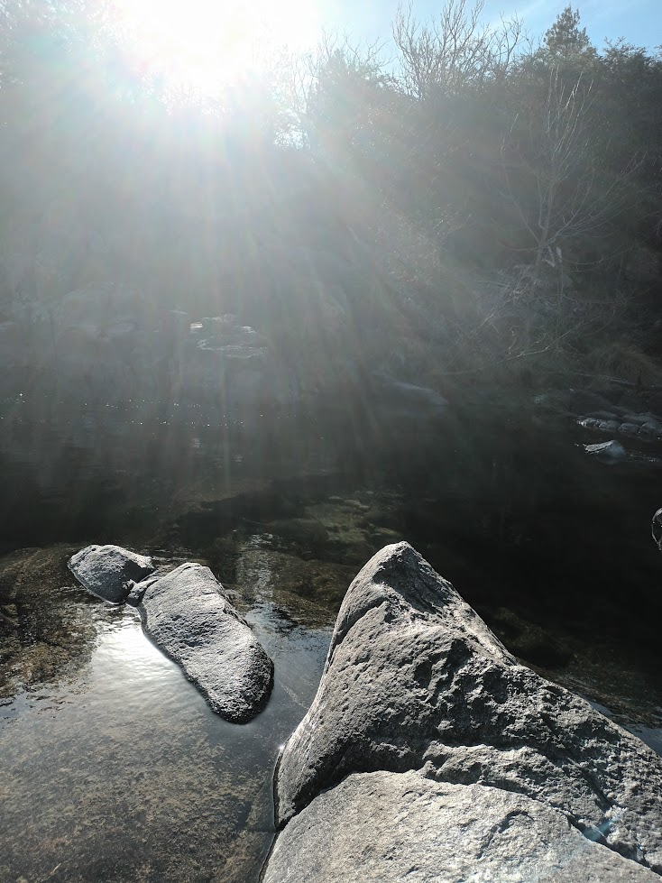
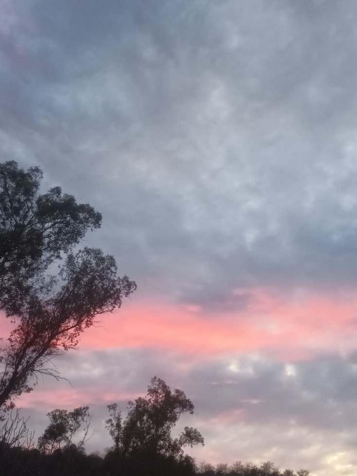

Capítulo 1 - Conociendonos | Agosto de 2023
Estaba en último año de la secundaria, un día recibo un mensaje de Vicky, la preceptora (en ese tiempo) de los chiquitos de segundo, despues de que los otros apostoles ya habían tenido la reunión principal y contra todo pronostico, me invitaron a calamuchita, algo que soñaba desde 4to año ya que fue un viaje que a mi me marcó mucho...
En este viaje, iba a conocer (que no lo iba a descubrir hasta capitulos más adelante) a una de las personas más importantes de mi vida.
Con todos mis nervios, me subí a ese colectivo, lleno de personas que no conocía y con la incertidumbre de que si iba a ser un buen apostol, que era al rol que me citaron, viajé varias horas hacia córdoba, calamuchita. Llegamos y entre varias cosas que pasaron con poca relevancia, llegó la hora de la primera charla.
Ahí la vi, tímida como ella sola, una mina única en varios aspectos y que me iba a alegrar los días dentro de un año... Empezamos con las preguntas y intenté sacarle un poco de charla, contestaba y hasta ahí, no quería entrometerse mucho en las charlas, pero quien era yo para obligarla... Pasaban las horas y me despertaba la curiosidad sobre ella, Naiví Abril Sotelo, una chica de la cual solo había escuchado "Es bastante callada"
Pasaron los días, unos llantos de por medio, pero llegó el momento que más destaco de ese viaje, el post-soga, una actividad que marcó bastante a todos, pero a mi me dejó una marquita más especial en el corazón
Capítulo 1 - Conociendonos | Parte 2
 Miércoles 9 de Agosto de 2023, el día en el que ella, la chica misteriosa y tímida, iba a abrir sus brazos hacia mi para darnos nuestro primer abrazo, el primero de muchos que vinienen más adelante en la historia, despues de dos días hablando, socializando en grupo, charlando (dentro de lo que podía) en privado con ella, en uno de los momentos más tristes (o emotivo mejor dicho) del viaje, ella me abrazó. Fue un abrazo que quizá, en ese momento, no significó mucho, pero hoy pesa, pesa más que muchas cosas que pasaron en mi vida y pensar que a día de hoy (25 de noviembre de 2024) iba a ser lo mejor que me pasó en mucho tiempo es algo que me deja pensando en que lindas son las casualidades de la vida.
Finalizado ese día, al siguiente nos volvíamos, por desgracia nuestros caminos se separaron de ahí en adelante, ella volvió en otro colectivo diferente al mío y en la escuela no socializamos casi, la vida, o sus casualidades, nos separaron...
Capítulo 2 - El reencuentro | Mayo de 2024

Sí, Vicky otra vez lo hizo, me llamó de nuevo 1 semana antes del 28 de mayo, me citó de nuevo con los chiquitos de segundo, que ya no eran más "los chiquitos de segundo", ahora eran "los de tercero".
Y bueno, como vine haciendo énfasis en las casualidades de la vida, otra vez pasó lo mismo, el destino me unió a ella nuevamente, otra vez fuí apostol de Naiví, yo no lo podía creer y no aguantaba mis ganas de contarle que otra vez le tocaba conmigo, aunque no sabía si realmente quería estar conmigo, pero bueno...
Llegó el momento, se enteró que le toco conmigo y a los minutos inició la primer actividad de grupo, no recuerdo bien cuál era, pero si me acuerdo que se me acercó a hablar en un momento y me dijo "no sabes lo feliz que me pone estar con vos de nuevo, eras el apostol que yo quería" y eso hizo un click en mi corazón, realmente había estado cómoda conmigo el año anterior y quería volver a estar conmigo, me puso muy feliz y nunca se lo pude confesar...
Capítulo 2 - El reencuentro | Parte 2

Que decir de ese viaje, pasó de todo, otra vez (y sigo sin saber como), me abracé varias veces con Naiví, yo no lo podía creer ¿qué hice? me preguntaba, llegamos a hablar mucho, caminabamos sin rumbo charlando, hasta un día se sentó conmigo a contarme sobre cosas que le habían pasado en su vida, un enorme avance para nuestra relación, pues antes no quizo hacerlo.
Y creo que eso me dio la pauta, todo el interes que había sentido por ella me aseguró que quería mantener una relación con ella, saber de cierta forma que le hiciste bien a una persona y que podes sacarle una sonrisa, te impulsa mucho, pero eso lo vemos más adelante...
Hablamos demasiado, ya sé que lo dije varias veces, pero en ese momento estaba muy feliz de que ella se abra conmigo y me cuente tantas cosas. Entre todo esto, seguía pasando el tiempo y llegó el fin del campamento, en el último día lo único que quería era charlar 5 minutos más con ella, sabía que por mucho tiempo no iba a poder verla y hablar cara a cara, me encomendaron la tarea de repartir unas frases, recuerdo perfectamente leer cada una y decir "esta es para ella" y lo hice, corrí hacia donde estaban los chicos, la busque entre toda la marea de cabezas y la encontre, hice la entrega de la frasesita en forma de corazón y me baje, me sentí satisfecho la verdad, sabía que esa frase debía estar en sus manos.
Entre toda la tristeza de la despedida, de tener que volver a nuestras vidas (que por cierto, tenía parcial al otro día de llegar), se acercó mi curita al corazón, la persona que me hace feliz actualmente y me dijo "Mate, ¿nos podemos sacar una foto?", yo, más que feliz, accedí a darle esa foto, que fue otra dosis de felicidad para mi corazón, ya que me había quedado con ganas de hacerlo desde el año pasado
Capítulo 3 - ¿Continuará? | Junio de 2024 - Para

Bueno, terminaron los viajes ¿y ahora? yo sentía que todavía había una historia que seguir con vos... No sé, un día sentí que debía hacerlo y te mandé el primer mensaje, no recuerdo muy certero que decía, pero sí que fue la mejor decisión de mi vida.
Mandé ese mensaje y desde ese día, creo que nunca dejamos de hablar todos los días, me acuerdo que empezamos hablando del tema que habíamos dejado pendiente en Olvieros, lo de tu papá, me contaste todo y traté de ayudarte, ¿quién me iba a decir que por ayudarte ahí iba a tener que hacerlo para siempre?, nadie, pero si me lo hubieran dicho te iba a ayudar con más ganas todavía.
Y bueno, que decirte mi Nani, pasaron tantas cosas desde ese día, pero algo que destacó siempre es como nos unimos tan rápido y nos ayudamos mutuamente, y ya en lo personal, estuviste en el momento más difícil de mi vida, en el cual muy pocos estuvieron y eso no lo voy a olvidar jamas, por eso hice la promesa de que voy a estar siempre, siempre, siempre para vos, enserio, siempre. Quiero sacarte una sonrisa hasta en tu peor día, porque con hacerte feliz soy feliz yo también.
Gracias por estar presente en mi vida, te quiero como a nadie quise nunca, sos la persona más especial de mi vida y la mejor que conozco, gracias por ese amor incondicional que me das siempre, a pesar de tus cambios de humores repentinos y todo lo que nos pasa día tras día. Por tus abrazos de oso sanadores que me curan todo lo malo que me pasa, por compartir ese rato en el gym que nos mejora el día a ambos.
Sos lo mejor que me pasó en este año, gracias por ser parte de mi vida, por los mensajes de "te extraño", tus mensajes alentandome a ser mejor y superarme cada día, sos la persona que más me ayuda día tras día y no sabes cuánto lo valoro. Espero que no estes llorando en este momento, pero si lo estas, espero que sean lágrimas de felicidad, porque yo si lagrimié al recordar toda nuestra hermosa historia juntos.
Te quiero muchisimo mi Nani, por y para siempre.